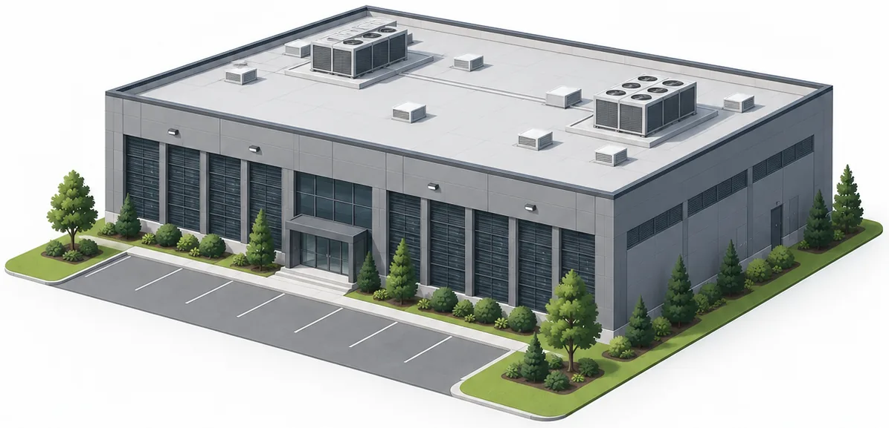

Scale illustration · not a project renderingSmithfield Gateway Data Center
Smithfield Township, Monroe County
One proposed two-story building with 500,000 sq. ft. of total floor area and a ground footprint of 250,000 sq. ft. Conditional use is not construction approval.
- sq. ft. · two floors
- 500,000
- proposed load
- 250 MW
- on-site jobs estimated
- ~60
September 9, 2026 · 6 PM. J.T. Lambert Intermediate School. September 23 reserved for continuation if needed.
Check sourceDetails & what we know
Conditional use pending
- Developer
- DEPG Mosier Associates LP / DEPG of Shawnee II LP
- Site / building
- One two-story building; 250,000-sq.-ft. footprint, plus substation and equipment yard.
- Power demand
- 250 MW proposed by the applicant.
- Water demand
- Final demand not established. Applicant proposes closed-loop and/or air-cooled systems.
- Permanent jobs
- Applicant estimates ~60 on-site jobs, about 20 per shift.
- Approval stage
- Conditional-use review. Land-development approval would still be required before construction.
What we know
The August revision replaces the earlier two-building concept. Applicant figures describe the proposal, not guaranteed operating outcomes.
What remains unknown
Final engineering, water consumption and construction approval remain unresolved.
Power demand · Water supply · Noise · Land use
Sources
- Official Township project hub
- Applicant filing Revised plans and figures · PDF
Sources reviewed